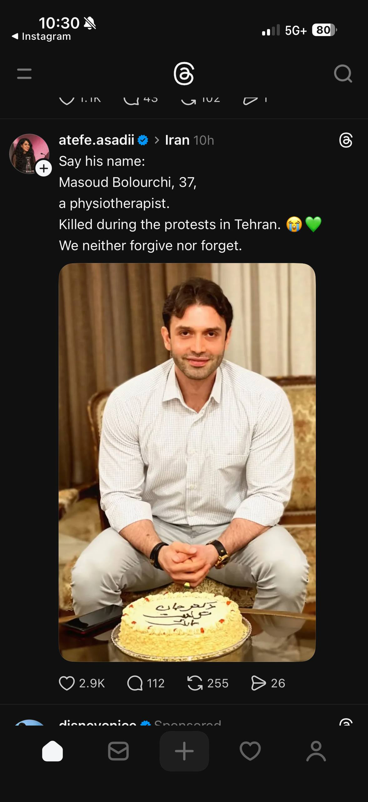

Masoud Bolourchi
City: Tehran • Date: N/A • Age: 37

Sadra Boroumand
City: N/A • Date: N/A • Age: N/A
Ghazal Demircheli
City: Golshahr • Date: N/A • Age: 17
Rozita Rokhzadeh
City: Tehran • Date: N/A • Age: 32
Names and faces documented from public sources.
City: Tehran • Date: N/A • Age: 37
City: N/A • Date: N/A • Age: N/A
City: Golshahr • Date: N/A • Age: 17
City: Tehran • Date: N/A • Age: 32